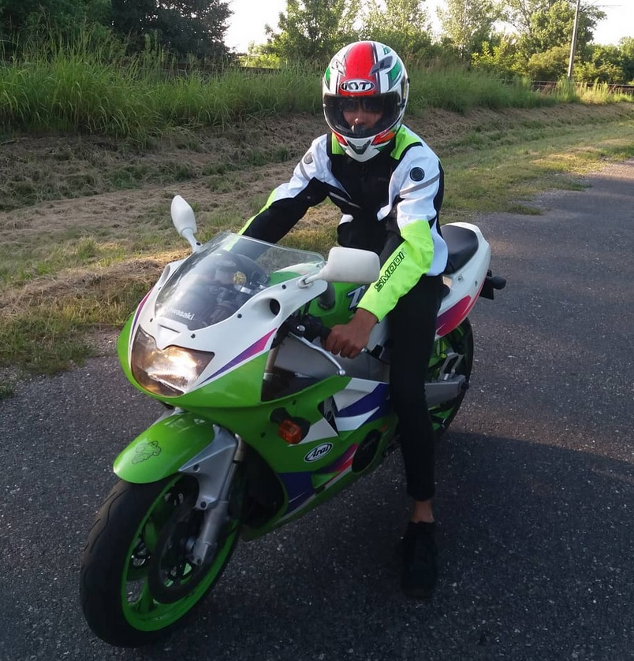

Fekete Domonkos vagyok, jelenleg energetikai mérnöknek tanulok a BME-n. Már általánosban is energetikai mérnök szerettem volna lenni, ám ennek ellenére érettségi után a fizika szakot választottam. Azonban nagyon hiányzott a gyakorlatiasság, a gépész vonal a sok matek és fizika mellett, ezért döntöttem a fenn már említett szak mellett. A későbbiekben vagy atomenergiával, vagy épületgépészettel szeretnék foglalkozni.
Mind gimnáziumban, mind egyetemen számos tanulmányi versenyen vettem részt, több szép eredményt is elértem különböző tárgyakban. Részben ezért is döntöttem eredetileg a fizika szak mellett, mert az elméleti problémák megoldásában egészen jó voltam.
Hogy a tanulmányoktól elszakadjak, kettő hobbim van: a motorok, és a sport. Mióta eszemet tudom, mindig sportoltam valamit: kipróbáltam magam fociban, kosárlabdában, úszásban, atlétikában, petanque-ban, triatlonban. Atlétikában és fociban egy-két megyei szintű dobogós helyezést sikerült elérni, viszont úszásban és petanque-ban országos szinten is tudtam bizonyítani.
Azonban ami igazán meghatározza manapság az életem, az nem más, mint a motor. Szeretek motorozni, motort szerelni, akár építeni, restaurálni. Ezen alkotásaimról találhatók képek a Facebook, és Instagram profilomon.
